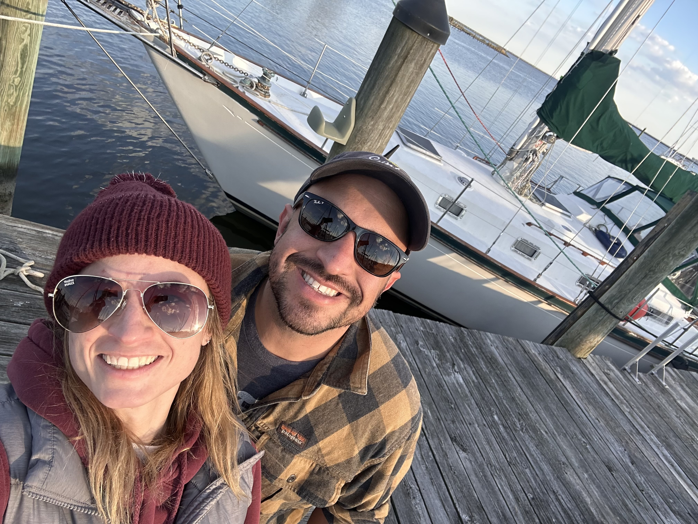
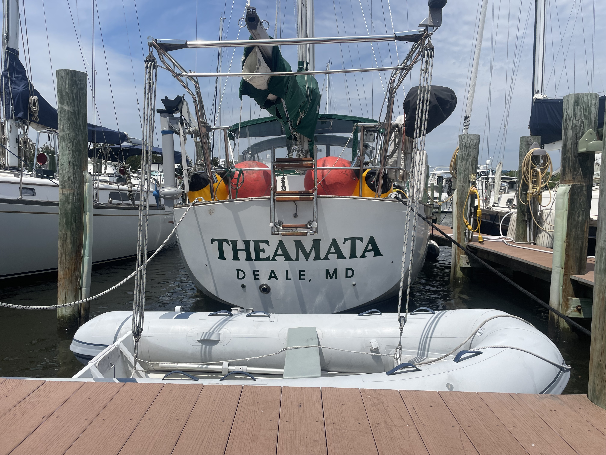

Hey, We are Morgan and DJ and this is our story
For most of our relationship, we joked that one day we'd win the lottery, buy a boat, and sail away. It was our way of coping with the stress of everyday work life. About four months after our wedding, Morgan looked at me and said, "Well, why do we need to win the lottery?" When I pointed out that we didn't have the money or the kind of jobs that let us work remotely, Morgan pointed out that those were both things we could change. So, after about two and a half years of saving, going back to school, and studying every Sail Life video we could find to prepare ourselves for any boat project that might come our way, we found Thea.
Theamata is a 1986 Whitby 42, built in Ontario, Canada. She's made roughly 30 trips up and down the East Coast in her lifetime and even sailed all the way to the Great Lakes. We bought her this past October in Maryland, about two hours from home, then moved her closer to home and the refit began.


Thea was in great shape overall, but she still had plenty that needed fixing or upgrading. Since October, we've replaced all the house batteries with lithium, installed a new Victron MultiPlus 2 to replace the old charger/inverter setup (the old inverter was literally held up with a zip tie and a piece of wood, safety first!), completely rebuilt the aft companionway hatch, replaced the wiring, redid the engine room floor with new epoxied wood, repainted all the cabinets, filled in the holes in the nav station with new wood, installed new lights and a new sink, and tiled the galley. There's always more on the list, and every weekend is a mad dash to get as much done as possible while still working nine-to-fives, being a full-time student, and finding time to actually go sailing.
Since we won't have a choice come October, we'll head south and make it work. The plan is to start in Annapolis, sail to Norfolk, take the Dismal Swamp Canal, come out in the Outer Banks, and maybe make it to Oriental. From there, we want to keep heading south. The Caribbean or Bahamas are the dream, and we will get there when we're ready.
